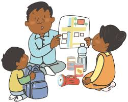
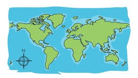
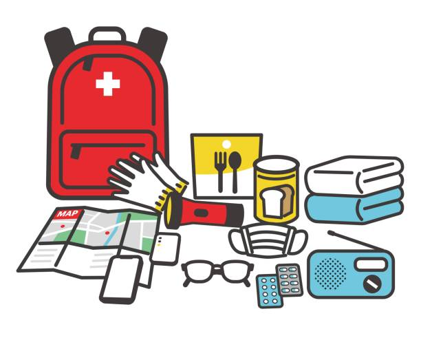

Be a Hero: Prepare for Disasters!
Be a Disaster Hero!
Disasters can happen sometimes, but don't worry! By being prepared, you and your family can stay safe and strong. We'll learn what disasters might happen in your area and how to be ready for them. Remember, even little heroes can make a big difference!
Know Your Risks
What Disasters Can Happen Here?
Every place has different types of disasters. Talk to your grown-ups to find out what kinds of things might happen where you live, like floods, storms, earthquakes, or fires.
Make a Plan
Family Meeting Time!
Gather your family and talk about what to do if a disaster happens. Here are some things you can discuss:
- Meeting Spot: Choose a safe place outside your home to meet if you get separated.
- Out-of-Town Contact: Pick someone who lives far away to be your emergency contact person.
- Escape Plan: Know two ways to get out of your house in case of fire or another emergency.
Build a Kit
Pack Like a Pro!
Create a disaster preparedness kit with essential supplies you'll need. Decorate a backpack or box and fill it with these things:
- Non-perishable food (canned goods, granola bars, etc.) and water (enough for 3 days)
- First-aid kit and any medications you need
- Flashlight and extra batteries
- Blanket or sleeping bag
- Important documents (copies of IDs, passports) in a waterproof bag
- Comfort items (stuffed animal, favorite book) for younger kids
Practice Makes Perfect!
Disaster Drills: Be Ready, Not Scared!
Practice your escape plan and using your kit with your family. You can even make it fun! Play a "disaster drill" game and pretend to get out of the house quickly.
Remember:
The most important thing is to stay calm and listen to your grown-ups during a disaster. By being prepared, you can help keep yourself and your family safe!